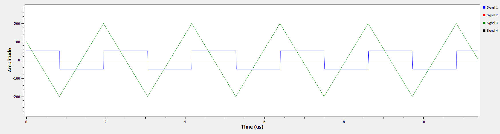
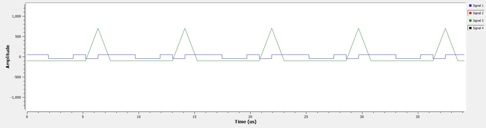

Ayman Al Rubaey
Ian Sefton
Alexander Gowans
Oluwateniola Fasanmi
Eric Le
With the growing frequency of wildfires, early detection is critical to reduce damage and save lives. Traditional detection methods are slow and resource-intensive. Our project aims to develop a low-cost, real-time detection system using radio frequency signals and sensor data to identify forest fire events and alert relevant authorities.
Early detection of wildfires is critical to minimizing environmental damage and allowing firefighters to respond, especially in rural areas. Traditional wildfire detection methods such as satellite imaging, camera surveillance, and ground sensors have limitations in coverage, detection response, and weather conditions. This project uses an alternative approach with radio waves as a carrier wave to reflect off of the ionosphere to detect changes caused by wildfires. To assess the feasibility of this method, a prototype system was developed using one USRP with a LFRX and LFTX daughterboard and one USRP with a LFRX daughterboard so that a 5 MHz carrier wave could be transmitted and received with a 7-bit Barker's code. Analyzed frequency range of forest fires using Brunt-Väisälä frequency equations.
2 Bit Barker's Code
7 Bit Barker's Code
We would like to thank Dr. Rodney Herring, Dr. Peter Driessen, Arthur Makosinski and the University of Victoria for providing access to the lab facilities and equipment necessary for our research.
Download the final report here: